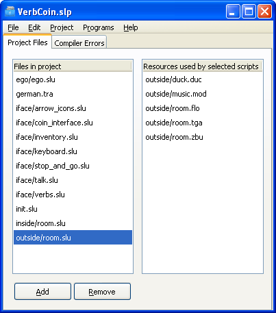

The SLUDGE Project Manager is the turning-point of the Development Kit. Use it to...
The SLUDGE Project Manager window looks like this:

The Project Files tab shows all the files which make up the project. Doubleclicking a file will open it in the appropriate program (on Windows and Linux some of the programs to use can be specified in the Preferences dialog). The file locations shown are based on the location of the currently loaded project file.
The list on the left shows all the scripts which make up the project. The files shown here should be text files with the extension ".SLU" (for scripts), ".SLD" (for constants) or ".TRA" (for translation files). The order of the files is not important (unless your script attempts to set the start value of a global variable to another which has not yet been created). Prototyping functions and externing variables from other files is not required. Adding or removing files is done using the respective buttons below the list. When removing a file, the file itself is not deleted from your computer - it just won't be included the next time the project is compiled.
You can select a file in this list by clicking it with the mouse. You can also select multiple files - for example, by holding down your keyboard's control ("Ctrl") key and clicking on subsequent files with the mouse. The list on the right contains all the resources which are used by the files selected on the left.
Project Manager: "Project Settings" Dialog
Project Manager: "Preferences" Dialog
Spellchecking the Strings in your Game
SLUDGE and this SLUDGE documentation are copyright Hungry Software and contributors 2000-2010